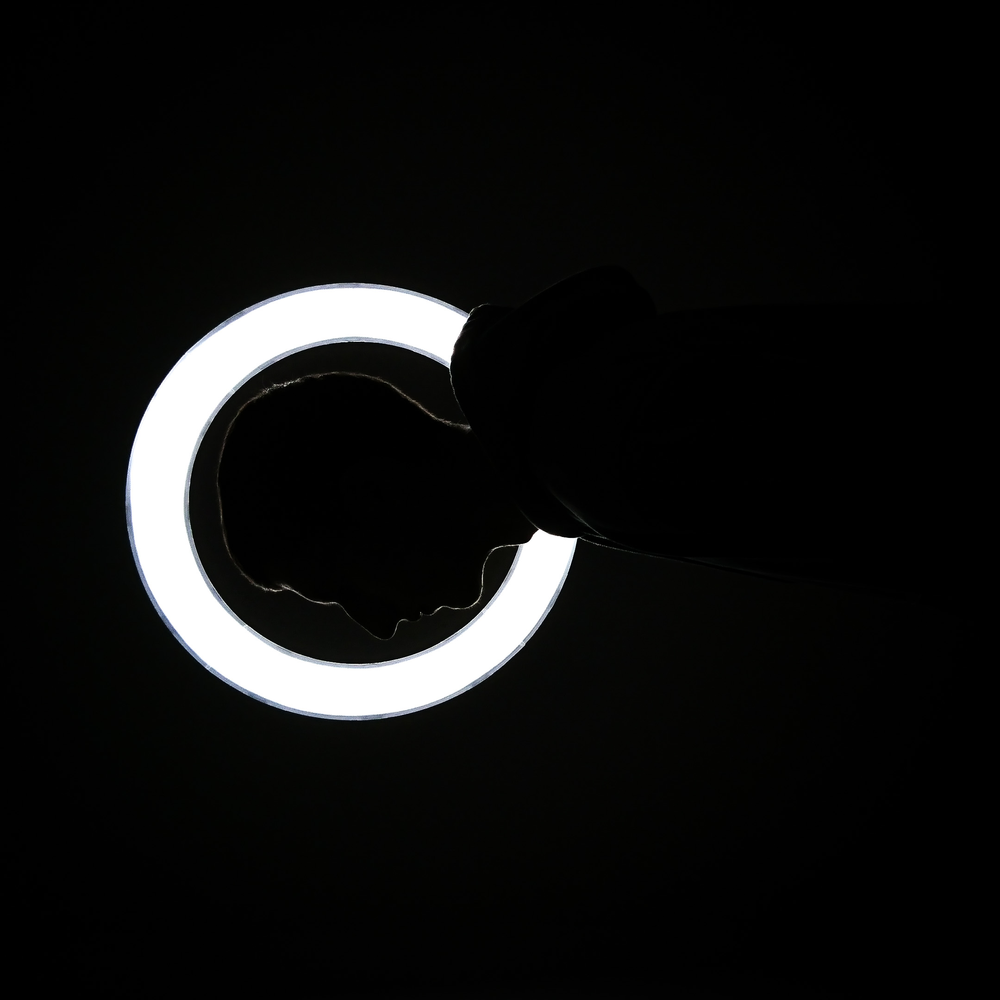
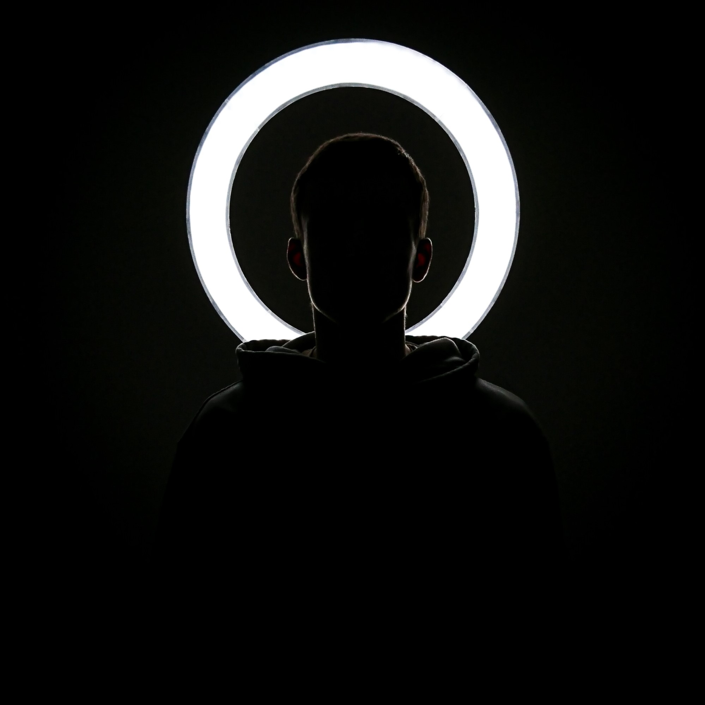
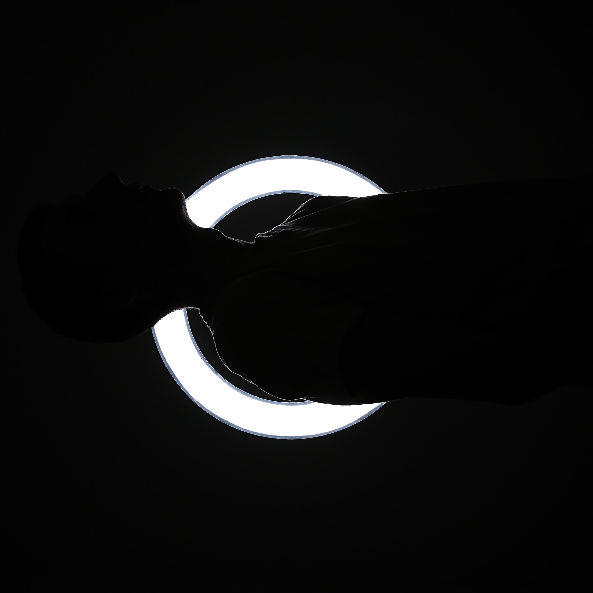
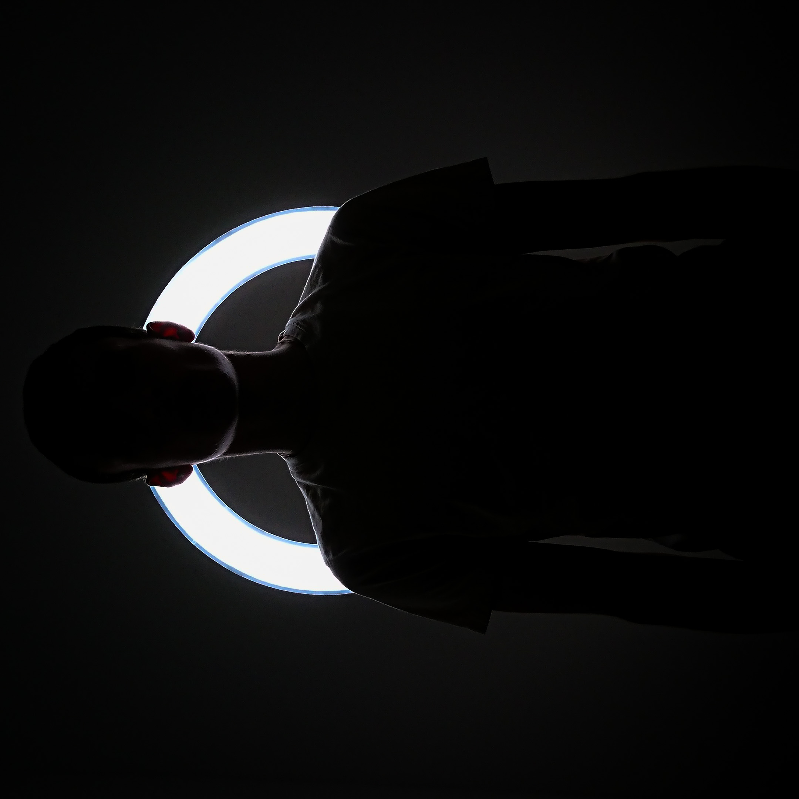

L'objectif était de réaliser des photos en contre-jour afin de dessiner les contours de mon corps grâce à la lumière. De cette manière, nous ne voyons pas la partie de mon corps face à la caméra car elle est complètement noire, et nous n’arrivons à distinguer que ma silhouette. Ce projet a été réalisé avec mon téléphone portable, un trépied, et une ring light. J’ai ensuite retouché les photos sur Camera Raw afin que cela donne bien l’effet escompté.



